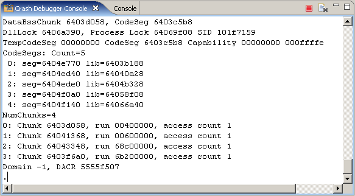
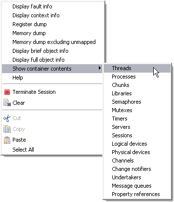

Use the Crash Debugger Console view (Figure 1) to resolve Symbian OS kernel crashes or panics. The Crash Debugger Console view interacts via a command-line interface with the crash debugger running on the device. To open the Crash Debugger Console select Window > Show View > Other... then expand Carbide.c++ folder to select Crash Debugger Console.

Figure 1 - Use Crash Debugger Console view to debug devices
To interact with the Crash Debugger running on the device, enter command-line commands in the view or choose them from the context menu. The context menu (Figure 2) appears whenever you right-click in the Crash Debugger Console view.

Figure 2 - Right-click in Crash Debugger Console view to display the context menu
NOTE If an address is selected in the Crash Debugger Console view, choosing a command from the context menu uses the selected address without displaying the Memory Dump Options window, using a default length of 100 bytes.